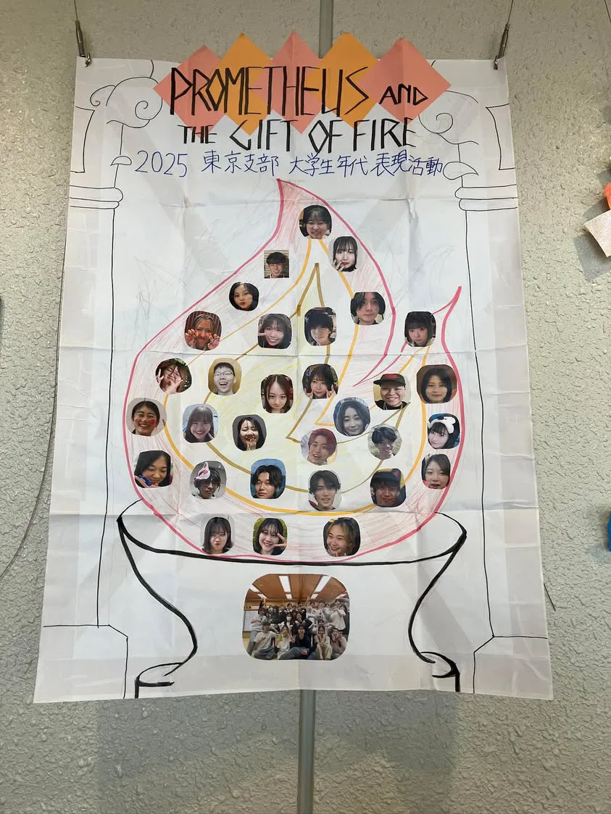

東京支部大学生年代表現活動
『Prometheus and the Gift of Fire プロメテウスの火-』（SK21 DiscⅣ）

あらすじ
彼は選んだ。
まだ誰も知らない人間の未来を
ただひとりだけ見ていた。
その代償がどれほど苦悶で
どれほど孤独でも。
そして彼は叫ぶ。
コメント
向き合うことから逃げなかった。
ひとりでは足りない。
わたしたちの
熱意、探求、言葉を束ねて
"揺るがない創作"へと変えてきた。
わたしたちだから掴めた
“表現”を
“束ねてきた軌跡のすべて”を
この-瞬間-に放出します。
当日写真
支部's模造紙

対談企画 後日回答
A1.質問ありがとうございます！細かい表現まで注目してくれていてとても嬉しいです！
私たちの中では、神殿の柱でやっていた手のポーズは火を表す意図ではなかったのですが、がんじがらめさんのようにこの表現を火として捉えても面白味があるなと思います！
考えてみれば、聖炉に向かうこの回廊はきっとただ真っ暗な空間ではないと思う反面、この空間を照らす為に火が簡単に使われるともあまり思えなかったり、、、（ゼウスは火の扱いに敏感なので）神々の世界はどうやって空間を照らしているのか気になりますね！
聖炉までの一連のシーンはギリシャ圏の実際の建築や美術を参考にしてメンバーから生まれたアイデアで、柱に神々の作ったスケール感と美しさを加える為に装飾の一部として表していました。そして、この後プロメテウスが辿り着く神聖な聖炉までの道中なので、落ち着いた回廊をイメージしています。
A2.質問ありがとうございます！
ライブラリーのタイトル部分に関してですね！表活を3年やっていますが、タイトル、そしてどこからこの物語を始めるのか、に関して毎年議論が白熱します。
まず、タイトル部分に関しては一人一人が「人間」として立って言葉を発していました。この「人間」という概念にはメンバーそれぞれが込めたい意味があり、どのような人間なのかは統一していません。
例えば、ギリシャ神話を語り継ぐ人々かもしれないし、今を生きるその人自身としてかもしれない。プロメテウスが人類に残した火から生まれたものはこの世に溢れていれている、それを1人の「人間」としてどう受け止めるのか、そんなところまで想いを馳せていたりしてましたね。
そして、お話の入り口に関する部分は明確にタイトル部分とその次に来る音楽の始まり部分で分けています。そこの間に繋がりは作らず、音楽部分からこの物語が始まり、神々の世界の情景、そしてプロメテウスの持つ予知能力を全面に広げていきました。
メンバー間でも感激しながら話していたのですが、このライブラリーの最初の音楽、すっごく素敵なんです。落ち着いた始まりから途中光が差してくるような音もあったりして、一気にギリシャ神話の世界観に引き込まれるんです。本当に常々ライブラリーを制作されている方々の素晴らしさに感動します。お会いして色々質問してみたい〜なんて思いながら活動してました。話は逸れましたが、このような経緯があり、この音楽に乗せて物語を始めたいという結論になりました！